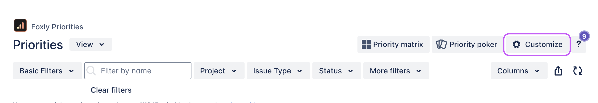
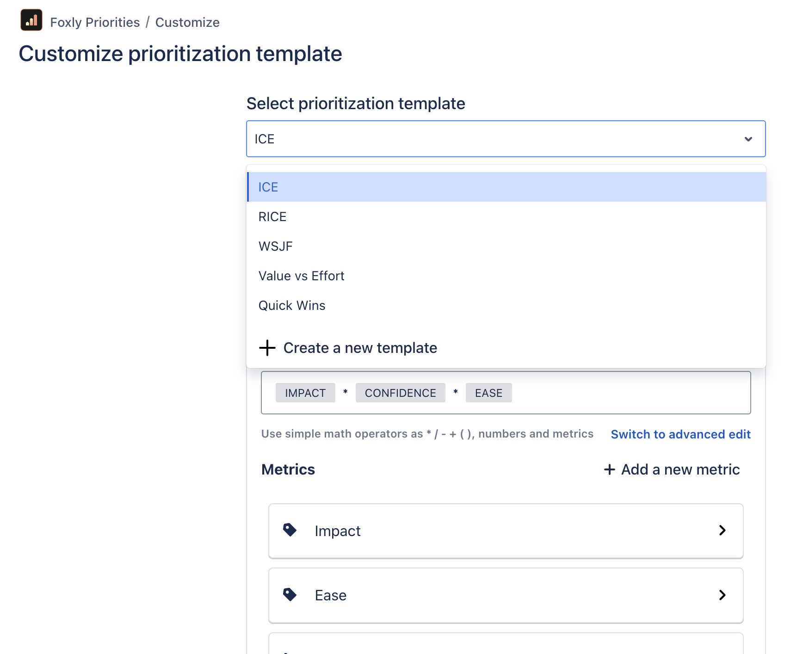

Change the prioritization template
If the selected prioritization template doesn't work for you, you can select a different one or even create your own.
There are four predefined templates available:
Selecting a different template
From the project menu, navigate to the Priorities tab.

Click Customize in the top-right corner.
Click the Select prioritization template drop-down and select the template you want to use for this project.
Click Save Changes.

The new template is now applied to your project, and it's ready to use.